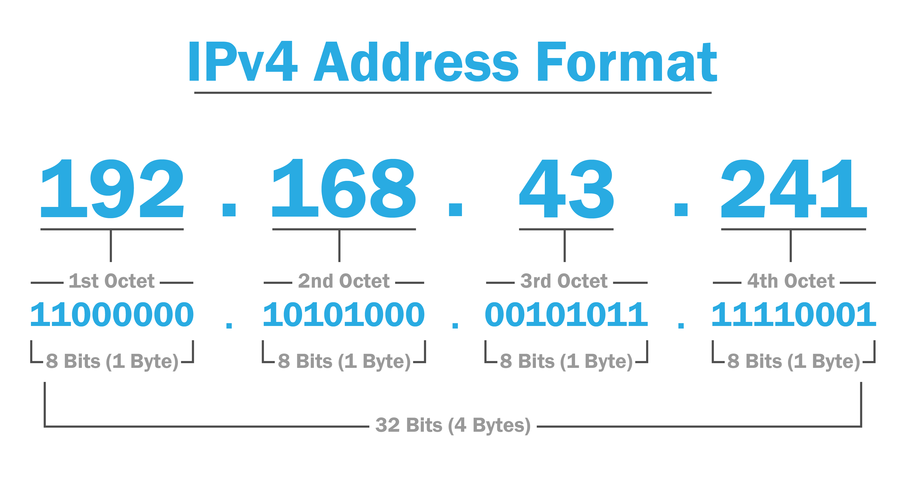

🌐 Introdução à Infraestrutura de Redes
A infraestrutura de redes é o conjunto de dispositivos, sistemas, protocolos e tecnologias que permitem a comunicação entre computadores, servidores, dispositivos móveis e outros equipamentos em um ambiente digital. Ela é a base que sustenta a troca de dados, o acesso à internet, a segurança da informação e a operação de sistemas corporativos e domésticos.
Essa estrutura envolve elementos como roteadores, switches, firewalls, cabeamento estruturado, Wi-Fi, endereçamento IP, servidores de DNS, entre outros. Compreender como esses componentes interagem é essencial para administrar redes seguras, rápidas e escaláveis.
Em um mundo cada vez mais conectado, dominar os fundamentos da infraestrutura de redes é fundamental tanto para profissionais de TI quanto para entusiastas da cibersegurança. É esse conhecimento que permite identificar falhas, otimizar conexões e proteger os sistemas contra ataques externos.
Abaixo você treá um guia completo para aprender sobre redes e sua infraestrutura.
Modelo OSI e TCP/IP
Modelo OSI
O Modelo OSI (Open Systems Interconnection) é composto por 7 camadas, cada uma com uma função específica para descrever a comunicação em redes:
- Física: Transmissão de bits através de cabos, conectores e sinais elétricos.
- Enlace: Garante uma comunicação livre de erros entre dois dispositivos diretamente conectados. Ex.: Ethernet.
- Rede: Roteamento de pacotes entre redes diferentes usando endereços lógicos (IP).
- Transporte: Garante a entrega confiável de dados. Ex.: TCP (confiável) e UDP (não confiável).
- Sessão: Gerencia conexões entre dispositivos. Ex.: APIs.
- Apresentação: Tradução de dados para formatos compreensíveis, incluindo criptografia. Ex.: SSL/TLS.
- Aplicação: Interação com o usuário final por meio de aplicativos. Ex.: HTTP, FTP.
Modelo TCP/IP
O Modelo TCP/IP é mais prático e amplamente usado na Internet, com apenas 4 camadas:
- Link: Combina as funções das camadas Física e Enlace do OSI.
- Internet: Responsável pelo roteamento dos pacotes. Ex.: IPv4, IPv6.
- Transporte: Gerencia a entrega ponta a ponta. Ex.: TCP, UDP.
- Aplicação: Integra as funções das camadas superiores do OSI. Ex.: HTTP, DNS.
Endereçamento IP
IPv4
Usa 32 bits e suporta cerca de 4,3 bilhões de endereços. Formato: 192.168.0.1.
- Classes: A (10.0.0.0), B (172.16.0.0), C (192.168.0.0).
- CIDR: Representa sub-redes modernas. Ex.: 192.168.0.0/24. 
IPv6
Usa 128 bits e oferece um espaço enorme de endereços. Formato: 2001:0db8::7334.
ARP (Address Resolution Protocol)
Resolve endereços IP em endereços MAC para comunicação em redes locais.
Vulnerável a ataques como ARP spoofing, que permitem interceptação de tráfego.
DNS e DHCP
DNS
Converte nomes de domínio para endereços IP. Ex.: google.com → 172.217.28.206.
- A: Associa nomes a endereços IPv4.
- AAAA: Associa nomes a endereços IPv6.
- CNAME: Redireciona para outro domínio.
DHCP
Atribui automaticamente endereços IP e configurações de rede aos dispositivos.
Equipamentos de Rede
Switches e Hubs
Switches direcionam dados para destinos específicos, enquanto hubs enviam dados para todos os dispositivos.
Roteadores
Conectam redes diferentes e utilizam protocolos como RIP, OSPF e BGP para definir rotas.
Access Points (APs)
Permitem conexões sem fio e podem ser independentes ou controlados por um controlador central.
Firewalls
Controlam o tráfego de entrada e saída com base em regras predefinidas, protegendo redes contra acessos não autorizados.
Tecnologias de Rede
Ethernet
Conexão por cabos. Padrões: 10BASE-T, 100BASE-TX, 1000BASE-T.
VLANs
Segmentam redes físicas em redes lógicas, melhorando segurança e desempenho.
VPN
Cria conexões seguras usando IPsec, OpenVPN ou WireGuard.
Wireless Networking
Padrões como 802.11a/b/g/n/ac/ax garantem conectividade sem fio eficiente.
Protocolos e Serviços
HTTP/HTTPS:
HTTP: Comunicação web sem segurança.
HTTPS: HTTP com criptografia (TLS/SSL).
FTP/SFTP:
FTP: Transfere arquivos entre cliente e servidor.
SFTP: Versão segura usando SSH.
SMTP, IMAP, POP3:
SMTP: Envio de e-mails.
IMAP: Leitura de e-mails no servidor.
POP3: Transferência de e-mails para o cliente.
ICMP:
Diagnóstico de redes. Ex.: Ping, traceroute.
SNMP:
Monitoramento de dispositivos de rede.
Ferramentas Práticas
Wireshark:
Função: Análise de tráfego em redes.
Usos: Solução de problemas , Detecção de ataques.
Nmap:
Função: Mapeamento , escaneamento de portas e redes.
Modos: Escaneamento rápido (ping) , detecção de sistemas operacionais.
Netcat:
Função: Depuração e teste de conexões TCP/UDP.
Exemplo: Estabelecer uma conexão de bate-papo simples.
Topologias de Rede
As principais são:
Estrela:
Dispositivos conectados a um ponto central (switch/roteador).
Barramento:
Dispositivos compartilhando um único cabo.
Anel:
Dados trafegam em um círculo , passando por cada dispositivo.
Cibersegurança em Redes
Hardening:
Reforço da segurança (atualizações, desativação de serviços desnecessários).
IDS/IPS:
Sistemas de detecção e prevenção de intrusão.
Firewalls:
Barreiras de proteção que filtram e controlam o tráfego de rede com base em regras de segurança.
Ataques Comuns:
MITM (man-in-the-middle).
ARP Spoofing
Implementação de IDS/IPS no Kali Linux
Os Sistemas de Detecção e Prevenção de Intrusão (IDS/IPS) ajudam a monitorar e proteger redes contra ataques. O Snort é um dos IDS/IPS mais populares e amplamente utilizado na cibersegurança.
1️⃣ Instalando o Snort no Kali Linux
Para instalar o Snort no Kali Linux, abra o terminal e execute:
sudo apt update && sudo apt install snort -y
Durante a instalação, pode ser solicitado para inserir o endereço de rede da sua máquina. Se não souber qual é, use o seguinte comando para descobrir:
ip a
Isso listará as interfaces de rede disponíveis, como eth0, wlan0, etc. Anote a interface conectada à sua rede.
2️⃣ Configurando o Snort para Monitorar a Rede
Edite o arquivo de configuração do Snort para definir a faixa de IPs da rede que será monitorada:
sudo nano /etc/snort/snort.conf
Dentro do arquivo, procure a linha:
var HOME_NET any
E altere para a faixa de IPs da sua rede. Por exemplo, se sua rede usa o intervalo de 192.168.1.0/24, modifique para:
var HOME_NET 192.168.1.0/24
Salve e saia pressionando CTRL + X, depois Y e ENTER.
3️⃣ Testando Snort como IDS (Detecção de Ataques)
Agora vamos testar o Snort operando como IDS, apenas detectando ataques sem bloqueá-los. Execute o seguinte comando:
sudo snort -A console -i wlan0 -c /etc/snort/snort.conf -l /var/log/snort
⚠️ **Substitua wlan0 pela interface de rede correta!**
Se um ataque for detectado, o Snort exibirá alertas no terminal.
4️⃣ Convertendo Snort em um IPS (Prevenção de Ataques)
Se quiser que o Snort bloqueie pacotes maliciosos em vez de apenas alertar, primeiro instale o iptables-persistent para salvar regras de firewall:
sudo apt install iptables-persistent -y
Agora, execute o Snort no modo IPS:
sudo snort -Q --daq afpacket -i wlan0:eth0 -c /etc/snort/snort.conf
Explicação:
-Qativa o modo IPS.--daq afpacketpermite que o Snort analise pacotes diretamente.-i wlan0:eth0define a interface de entrada e saída.
Agora, o Snort bloqueará automaticamente pacotes maliciosos!
5️⃣ Analisando Alertas
Os logs do Snort são armazenados em:
/var/log/snort/alert
Para visualizar os alertas gerados, use:
cat /var/log/snort/alert
📌 Extra: Criando Regras Personalizadas
Você pode criar suas próprias regras para detectar ataques específicos. Por exemplo, para detectar pings maliciosos (ICMP):
Edite o arquivo de regras do Snort:
sudo nano /etc/snort/rules/local.rules
Adicione a seguinte regra:
alert icmp any any -> $HOME_NET any (msg:"Ping Detectado"; sid:1000001;)
Agora, edite o arquivo de configuração do Snort para garantir que ele carregue essas regras:
include $RULE_PATH/local.rules
Salve e reinicie o Snort:
sudo systemctl restart snort
Agora, qualquer **ping recebido na sua rede** será detectado!
✅ Conclusão
Agora você tem o Snort operando como um IDS para detectar ataques e pode convertê-lo em um IPS para bloquear ameaças automaticamente.
✅ **IDS:** Apenas detecta ataques e gera alertas.
✅ **IPS:** Bloqueia tráfego malicioso em tempo real.
Se quiser explorar **Suricata** ou **Zeek**, que são alternativas modernas ao Snort, posso te guiar na instalação e configuração dessas ferramentas! 🚀
Virtualização e Redes
Ferramentas como GNS3 e Packet Tracer ajudam na criação de redes simuladas para aprendizado e testes.
Certificações e Prática
Certificações como CompTIA Network+ e CCNA validam conhecimentos técnicos em redes e segurança.
WAN & LAN
WAN (Wide Area Network): Rede de longa distância que conecta diferentes locais geográficos.
Exemplo: a internet.
LAN (Local Area Network): Rede local que conecta dispositivos dentro de um espaço pequeno, como uma casa, escritório ou escola.
Como funcionam?
LAN (Local Area Network) - Rede Local
A LAN é uma rede privada que conecta dispositivos dentro de um espaço pequeno, como uma casa, empresa ou escola. Ela pode ser cabeada (Ethernet) ou sem fio (Wi-Fi).
Funcionamento:
- Um roteador ou switch conecta todos os dispositivos na rede.
- Se for cabeada, os dispositivos usam cabos Ethernet.
- Se for sem fio, os dispositivos se conectam via Wi-Fi através do roteador.
- Dispositivos dentro da LAN podem se comunicar diretamente (compartilhamento de arquivos, impressão, etc.).
Exemplos de LAN:
- Rede Wi-Fi de uma casa ou empresa.
- Laboratórios de informática em escolas e universidades.
- Escritórios com PCs conectados a um switch.
WAN (Wide Area Network) - Rede de Longa Distância
A WAN conecta várias LANs ao redor do mundo. A internet é um exemplo de WAN, pois conecta milhões de redes locais.
Funcionamento:
- Usa infraestrutura de telecomunicações como fibra ótica, satélites, redes móveis (3G, 4G, 5G).
- As LANs dentro de uma empresa podem ser interconectadas por uma WAN.
- Os dados trafegam por roteadores e provedores de internet (ISPs).
- As WANs são mais lentas e caras que as LANs.
Exemplos de WAN:
- A internet, que conecta LANs de todo o mundo.
- Redes corporativas que conectam filiais em diferentes cidades ou países.
- Redes de universidades que interligam vários campi.
Resumo das Diferenças
| Característica | LAN (Rede Local) | WAN (Rede de Longa Distância) |
|---|---|---|
| Alcance | Pequeno (casa, empresa) | Grande (mundo todo) |
| Velocidade | Alta (até 10 Gbps) | Variável (depende do provedor) |
| Custo | Baixo (infraestrutura local) | Alto (provedores de internet) |
| Segurança | Mais fácil de proteger | Maior risco, pois envolve terceiros |